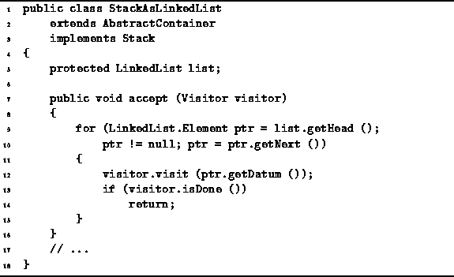
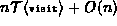
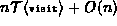

Data Structures and Algorithms
with Object-Oriented Design Patterns in Java
Data Structures and Algorithms
with Object-Oriented Design Patterns in Java
The accept method of the
StackAsLinkedList class
is defined in Program  .
The accept method takes a visitor
and calls its visit method
one-by-one for all of the objects on the stack.
.
The accept method takes a visitor
and calls its visit method
one-by-one for all of the objects on the stack.

Program: StackAsLinkedList class accept method.
The implementation of the accept method
for the StackAsLinkedList class mirrors that of
the StackAsArray class shown in Program .
In this case, the linked list is traversed from front to back,
i.e., from the top of the stack to the bottom.
As each element of the linked list is encountered,
the visit method is called.
If  is the running time of the visit method,
the total running time for accept is ,
where
is the running time of the visit method,
the total running time for accept is ,
where  is the number of objects in the container.
If we assume that
is the number of objects in the container.
If we assume that  ,
the total running time is O(n).
,
the total running time is O(n).
 Copyright © 1998 by Bruno R. Preiss, P.Eng. All rights reserved.
Copyright © 1998 by Bruno R. Preiss, P.Eng. All rights reserved.